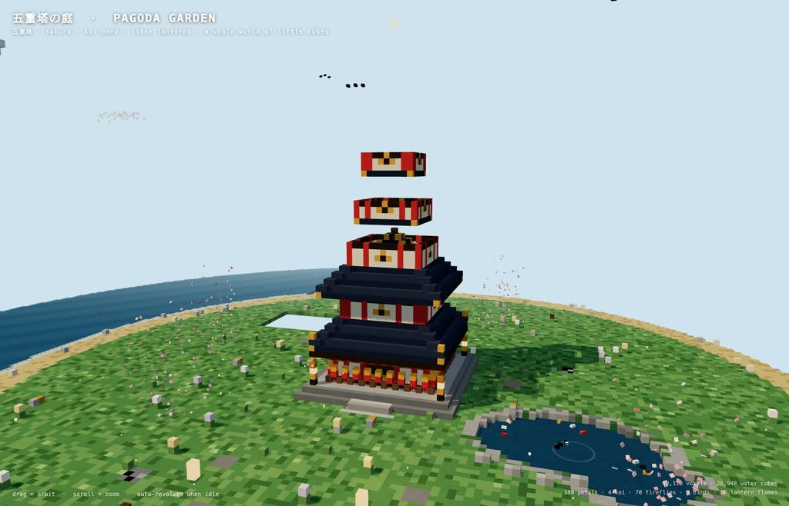
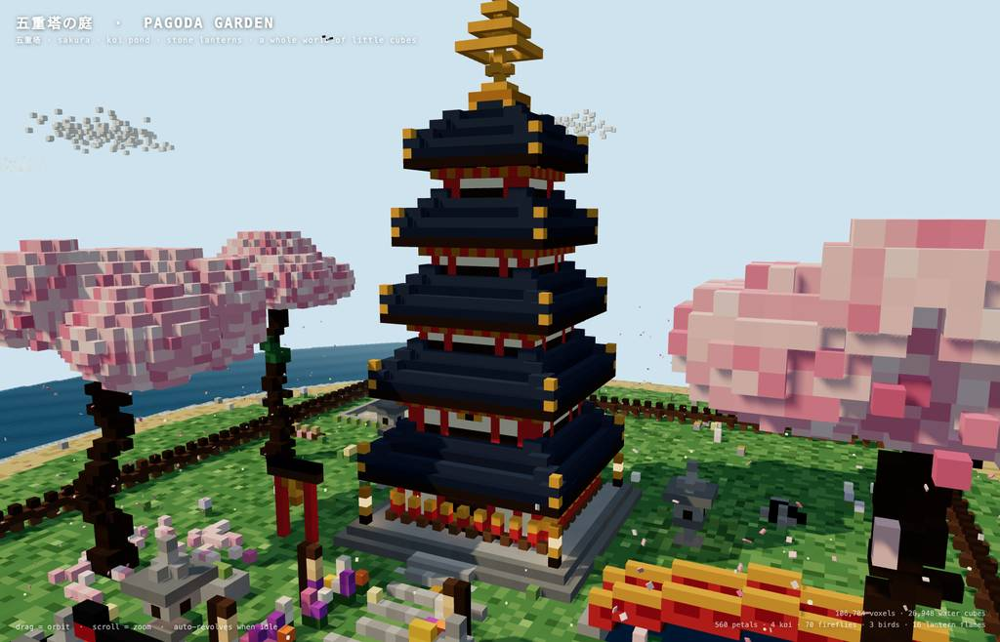
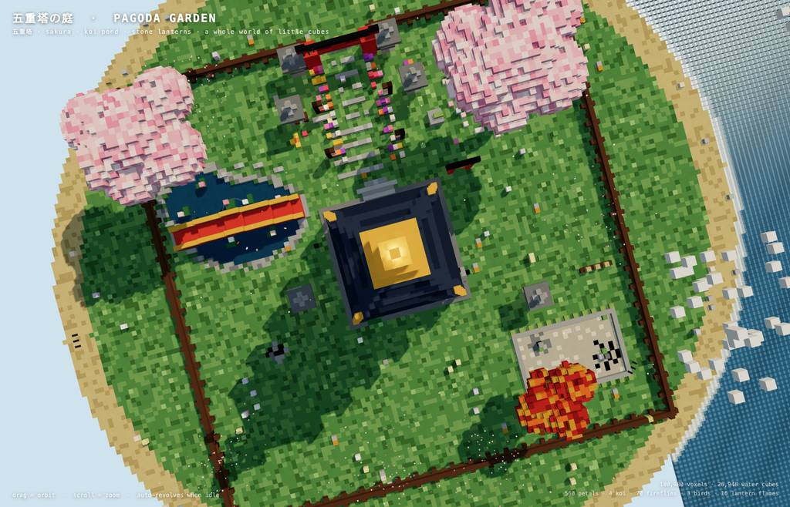

runs / 2026-10-19 / 231652-563000-baseline-a9698050
qwen3.8-flash-next がボクセル五重塔庭園を単一HTMLで生成し 1179秒で完了
qwen3.8-flash-next-iq3_s（thinking: high）が、五重塔と桜の庭園をボクセルアートで描く単一 index.html の生成を依頼され、48 件のメイン呼び出し・総出力 83,590 トークン・経過 1179.1 秒で status=completed（exit_code 0）を達成した。生成→構文/ブラウザ検証→バグ修正→スケール拡張→最終確認のループを回し、35,373 バイトの成果物と 9 枚のスクリーンショットを残した。
成果物
work/index.html（35,373 バイト）をそのまま同梱している。重いシーンもあるため、必要なときだけ起動する。
index.html
35 KB · 起動するまで読み込まない









logs/events.jsonl の画像ブロックを内容ハッシュで重複排除して時系列に並べた、制作中の検証用スクリーンショット。最終版とは限らない。
成果物の構成
| 要素 | 内容 |
|---|---|
| 成果物 | index.html（35,373 バイト）単一ファイル。Three.js と OrbitControls は CDN import map、その他はすべて手続き生成。 |
| 規模 | 静的体素 約 100,700 個＋水キューブ 約 27,000 個、seeded RNG で毎回同一に再生成。 |
| 五重塔 | 62 ブロック高さ。石基壇、朱の柱、格子窓、反り屋根、斗拱、心柱、相輪（蓮華・5 輪・宝珠）を発光体素で構成。 |
| 庭園 | 鳥居、朱の拱橋と 2 連のコイ池、枯山水（円環砂紋）、石灯籠、鐘楼、蹲踞、石ベンチ、花壇、つつじ。 |
| 植生 | 桜 8 本＋46 個/本の地面花びら、もみじ 4、黒松 6、柳 2、竹藪 3、松林、砂浜、海、遠景の雪島。 |
| アニメーション | 花びら 560、コイ 4、ホタル 70、鳥 3、流れる雲、水面揺らぎ、灯籠炎 16、自動回転カメラ。 |
| 検証 | ヘッドレス Chromium で 3 角度＋俯瞰 2 回を確認。致命的エラーなし、1400×900 で安定 fps を最終表示（#47）で確認。 |
モデルの最終メッセージから読み取った内容。コードの確認はしていない。
タイムライン
48 回の API 呼び出しを時間順に並べた。上段の帯の幅が各呼び出しの所要時間で、帯の間の空白がツールの実行時間。下段はその時点のコンテキスト長。
最も長い 2 回の生成（#1 222 秒・#3 144 秒）で 365.6 秒、壁時計の 31.1%。出力トークンの上位 4 回（#1・#3・#33・#2）で全体の 52.5%（43,916 / 83,590）。推論以外（ツール実行など）は約 72 秒（6%）。
フェーズ別の内訳
| フェーズ | 経過 | 所要 | 全体に占める割合 | 呼び出し | 出力 tok | 何をしたか |
|---|---|---|---|---|---|---|
| 環境確認 | 0:00–3:42 | 222 秒 | 18.9% | 1 | 16,484 | ワークスペース確認（glob）と node の構文チェック可否を bash で調べ、単発の巨大出力（221.6s・16,484tok）で設計を生成。 |
| HTML生成 | 3:42–7:15 | 212 秒 | 18.1% | 2 | 20,368 | write を 2 回使い、単一ファイルのボクセル五重塔庭園シーケンスを記述（合計 213.5s・20,368tok）。 |
| 初期修正 | 7:15–9:33 | 138 秒 | 11.7% | 9 | 9,994 | module script を抽出して構文チェックし、ゴースト体素・no-op バグ・bucket・橋台・ガード・影フラグを edit で修正。 |
| ブラウザ検証 | 9:33–13:44 | 251 秒 | 21.3% | 16 | 14,292 | eval でヘッドレスブラウザ表示・コンソールエラー・HUD 取得を繰り返し、不正な box() 呼び出し 4 件と stories/roofs の描画順バグを検出して修正。デバッグハンドル（window.VOX）を追加して体素色も検証。 |
| 庭の拡張 | 13:44–17:19 | 215 秒 | 18.3% | 10 | 16,663 | 木・雲・カメラの該当コードを read で確認後、木拡大・庭密度化・雲/花びら/相輪強化の大型 edit を実行（失敗→リトライ）。 |
| 仕上げ | 17:19–18:06 | 48 秒 | 4.1% | 4 | 3,103 | 柵・幹・花のクラスタ・カメラの磨き込み edit を行い、デバッグ出力の削除を開始。 |
| 最終検証 | 18:06–19:36 | 90 秒 | 7.7% | 6 | 2,686 | window.VOX 残存行を特定して削除し、構文再チェックと最終リロード・3 角度スクショでエラーなし・fps 安定を確認して終了。 |
フェーズの切れ目は、ログから読み取れる作業内容の変わり目（LLM による区切り）。所要時間は、そのフェーズの最初の呼び出しの開始から次のフェーズの最初の呼び出しの開始まで。
48 回の呼び出しを表で見る
| # | 種別 | フェーズ | 開始 | 所要 秒 | prompt | うち cache | 出力 | tok/s | HTTP | ツール |
|---|---|---|---|---|---|---|---|---|---|---|
| 1 | 主ループ | 環境確認 | 0:00 | 221.6 | 7,799 | 0 | 16,484 | 75.9 | 200 | glob + bash |
| 2 | 主ループ | HTML生成 | 3:42 | 68.2 | 24,317 | 7,794 | 6,128 | 97.8 | 200 | write |
| 3 | 主ループ | HTML生成 | 4:51 | 144.1 | 30,481 | 30,446 | 14,240 | 99.2 | 200 | write |
| 4 | 主ループ | 初期修正 | 7:15 | 68.2 | 44,757 | 44,723 | 5,115 | 75.4 | 200 | bash |
| 5 | 主ループ | 初期修正 | 8:23 | 9.5 | 49,896 | 49,872 | 662 | 71.8 | 200 | read |
| 6 | 主ループ | 初期修正 | 8:33 | 3.2 | 51,539 | 50,559 | 153 | 74.7 | 200 | bash |
| 7 | 主ループ | 初期修正 | 8:36 | 5.4 | 51,968 | 51,694 | 408 | 87.1 | 200 | read |
| 8 | 主ループ | 初期修正 | 8:42 | 3.7 | 54,469 | 52,376 | 180 | 74.5 | 200 | read |
| 9 | 主ループ | 初期修正 | 8:45 | 31.1 | 55,161 | 54,649 | 2,340 | 77.4 | 200 | edit |
| 10 | 主ループ | 初期修正 | 9:16 | 6.5 | 57,618 | 57,501 | 512 | 86.3 | 200 | edit |
| 11 | 主ループ | 初期修正 | 9:23 | 6.1 | 59,199 | 58,132 | 389 | 79.9 | 200 | edit |
| 12 | 主ループ | 初期修正 | 9:29 | 3.5 | 59,687 | 59,587 | 235 | 82.8 | 200 | bash + read |
| 13 | 主ループ | ブラウザ検証 | 9:33 | 5.2 | 62,970 | 59,922 | 269 | 78.2 | 200 | eval |
| 14 | 主ループ | ブラウザ検証 | 9:59 | 3.0 | 63,545 | 63,241 | 181 | 83.4 | 200 | eval |
| 15 | 主ループ | ブラウザ検証 | 10:04 | 15.8 | 64,895 | 63,725 | 1,196 | 85.4 | 200 | bash |
| 16 | 主ループ | ブラウザ検証 | 10:20 | 13.3 | 66,890 | 66,092 | 917 | 74.4 | 200 | edit |
| 17 | 主ループ | ブラウザ検証 | 10:34 | 8.9 | 68,194 | 66,885 | 601 | 81.8 | 200 | edit |
| 18 | 主ループ | ブラウザ検証 | 10:43 | 4.6 | 68,943 | 68,799 | 343 | 87.0 | 200 | edit |
| 19 | 主ループ | ブラウザ検証 | 10:47 | 6.3 | 70,025 | 69,286 | 425 | 80.9 | 200 | eval |
| 20 | 主ループ | ブラウザ検証 | 11:02 | 69.2 | 71,667 | 70,452 | 4,757 | 70.1 | 200 | eval |
| 21 | 主ループ | ブラウザ検証 | 12:12 | 2.3 | 76,574 | 76,423 | 123 | 72.1 | 200 | edit |
| 22 | 主ループ | ブラウザ検証 | 12:14 | 3.7 | 76,821 | 76,698 | 213 | 70.3 | 200 | edit |
| 23 | 主ループ | ブラウザ検証 | 12:18 | 4.4 | 77,142 | 77,034 | 272 | 72.1 | 200 | read |
| 24 | 主ループ | ブラウザ検証 | 12:22 | 7.0 | 77,792 | 77,414 | 441 | 71.9 | 200 | edit |
| 25 | 主ループ | ブラウザ検証 | 12:29 | 10.0 | 78,423 | 78,234 | 762 | 82.1 | 200 | eval |
| 26 | 主ループ | ブラウザ検証 | 12:44 | 6.5 | 79,335 | 79,186 | 468 | 80.4 | 200 | eval |
| 27 | 主ループ | ブラウザ検証 | 12:50 | 16.0 | 79,931 | 79,330 | 995 | 69.3 | 200 | eval |
| 28 | 主ループ | ブラウザ検証 | 13:11 | 33.0 | 82,469 | 80,927 | 2,329 | 74.0 | 200 | eval |
| 29 | 主ループ | 庭の拡張 | 13:44 | 30.7 | 85,296 | 84,797 | 2,080 | 69.7 | 200 | read |
| 30 | 主ループ | 庭の拡張 | 14:14 | 17.2 | 89,515 | 87,375 | 1,130 | 71.7 | 200 | read |
| 31 | 主ループ | 庭の拡張 | 14:32 | 24.5 | 92,407 | 90,644 | 1,765 | 76.0 | 200 | read |
| 32 | 主ループ | 庭の拡張 | 14:56 | 4.6 | 94,959 | 94,173 | 250 | 71.4 | 200 | bash |
| 33 | 主ループ | 庭の拡張 | 15:01 | 79.1 | 95,293 | 95,211 | 7,064 | 90.0 | 200 | edit |
| 34 | 主ループ | 庭の拡張 | 16:20 | 30.9 | 102,565 | 102,359 | 3,055 | 101.5 | 200 | edit |
| 35 | 主ループ | 庭の拡張 | 16:51 | 7.9 | 109,045 | 105,619 | 443 | 70.4 | 200 | read |
| 36 | 主ループ | 庭の拡張 | 16:59 | 4.8 | 109,872 | 109,488 | 317 | 82.6 | 200 | edit |
| 37 | 主ループ | 庭の拡張 | 17:04 | 5.6 | 110,530 | 110,188 | 331 | 69.9 | 200 | bash |
| 38 | 主ループ | 庭の拡張 | 17:10 | 3.2 | 110,879 | 110,860 | 228 | 79.5 | 200 | eval |
| 39 | 主ループ | 仕上げ | 17:19 | 24.5 | 111,937 | 111,109 | 1,592 | 68.4 | 200 | bash |
| 40 | 主ループ | 仕上げ | 17:43 | 5.5 | 113,603 | 113,531 | 431 | 87.9 | 200 | edit |
| 41 | 主ループ | 仕上げ | 17:49 | 10.2 | 114,165 | 114,035 | 791 | 83.0 | 200 | edit |
| 42 | 主ループ | 仕上げ | 17:59 | 7.1 | 115,564 | 114,160 | 289 | 72.3 | 200 | edit |
| 43 | 主ループ | 最終検証 | 18:06 | 1.8 | 115,972 | 115,853 | 89 | 78.6 | 200 | bash |
| 44 | 主ループ | 最終検証 | 18:08 | 9.1 | 116,096 | 116,062 | 733 | 84.3 | 200 | bash + eval |
| 45 | 主ループ | 最終検証 | 18:25 | 26.5 | 117,135 | 63,540 | 628 | 76.5 | 200 | edit |
| 46 | 主ループ | 最終検証 | 18:52 | 1.5 | 117,894 | 117,763 | 66 | 84.7 | 200 | edit |
| 47 | 主ループ | 最終検証 | 18:53 | 4.5 | 118,046 | 117,959 | 342 | 89.0 | 200 | eval |
| 48 | 主ループ | 最終検証 | 19:05 | 31.1 | 118,774 | 63,540 | 828 | 80.9 | 200 |
試行錯誤
ツールがエラー（isError）を返した結果の一覧。ツールは成功したのにモデル自身が内容を壊したケースは、ここには出ない。
エラーとして記録された 12 件
| 経過 | ツール | 起きたこと | 分類 |
|---|---|---|---|
| 9:16 | edit | #9 の edit が未表示領域（index.html#4916）の 676 行目を anchor に使いツールに拒否された。This edit anchors to lines 676 of index.html that [index.html#4916] never displayed (it showed a partial range, a search hit, or a folded summary). Actual file content at those lines: 676: Verify the | edit anchor拒否 |
| 9:38 | eval | #13 の eval 内で errs.slice が undefined となりスクリプト自体が TypeError で失敗。Opened tab "voxel" on headless browser (hidden, shared) URL: file://~ Title: 五重塔の庭 — Voxel Pagoda Garden TypeError: errs.slice is not a function. (In 'errs.slice(0,20)', 'errs.slice' is undefi | evalスクリプト誤り |
| 10:34 | edit | #16 の edit が複数行（index.html#AA71 配下）の未表示 anchor を理由に拒否。This edit anchors to lines 84-88, 206, 260-261, 450-451 of index.html that [index.html#AA71] never displayed (it showed a partial range, a search hit, or a folded summary). Actual file content at thos | edit anchor拒否 |
| 10:43 | edit | #17 の edit も同 #AA71 の 82 行目が未表示で拒否、#18 で再挿入。This edit anchors to lines 82 of index.html that [index.html#AA71] never displayed (it showed a partial range, a search hit, or a folded summary). Actual file content at those lines: 82: for(let x=x1; | edit anchor拒否 |
| 12:11 | eval | #20 の eval で wIdx 未定義の ReferenceError（evaluate 側）が発生。ReferenceError: wIdx is not defined at #f (/$bunfs/root/chunks/cli-9dftvayj.js:10857:17) at async evaluate (/$bunfs/root/chunks/cli-9dftvayj.js:10838:25) at async evaluate (/$bunfs/root/chunks/cli-9df | evalスクリプト誤り |
| 12:14 | edit | #21 の edit が #B8C4 の 676 行目 anchor 未表示で拒否、#22 で再実行。This edit anchors to lines 676 of index.html that [index.html#B8C4] never displayed (it showed a partial range, a search hit, or a folded summary). Actual file content at those lines: 676:document.get | edit anchor拒否 |
| 12:39 | eval | #25/#26 の eval 系で再度 wIdx 未定義の ReferenceError。ReferenceError: wIdx is not defined at #f (/$bunfs/root/chunks/cli-9dftvayj.js:10857:17) at async evaluate (/$bunfs/root/chunks/cli-9dftvayj.js:10838:25) at async evaluate (/$bunfs/root/chunks/cli-9df | evalスクリプト誤り |
| 16:20 | edit | #33 の大型 edit が #A9C8 の 184/490 行 anchor 未表示で失敗、#34 でリトライ。This edit anchors to lines 184, 490-491 of index.html that [index.html#A9C8] never displayed (it showed a partial range, a search hit, or a folded summary). Actual file content at those lines: 184: co | edit anchor拒否 |
| 17:49 | edit | #40 の edit が #2774 の 459-460 行 anchor 未表示で拒否、#41 で再実行。This edit anchors to lines 459-460 of index.html that [index.html#2774] never displayed (it showed a partial range, a search hit, or a folded summary). Actual file content at those lines: 459: } 460:} | edit anchor拒否 |
| 18:06 | edit | #42 の edit が #CEE9 の 707 行目 anchor 未表示で拒否。This edit anchors to lines 707 of index.html that [index.html#CEE9] never displayed (it showed a partial range, a search hit, or a folded summary). Actual file content at those lines: 707: =========== | edit anchor拒否 |
| 18:52 | edit | #45 の edit が同 #CEE9 の 708 行目（window.VOX 定義）anchor 未表示で拒否、#46 で完了。This edit anchors to lines 708 of index.html that [index.html#CEE9] never displayed (it showed a partial range, a search hit, or a folded summary). Actual file content at those lines: 708:window.VOX={ | edit anchor拒否 |
| 18:58 | eval | #44 の eval は 1024x658 の JPEG を正常返却し、失敗ではなく座標スケーリング（1.37 倍）の説明のみ。Screenshot captured Format: image/jpeg (82.42 KB) Dimensions: 1024x658 [Image: original 1750x1125 at capture scale 1.25, displayed at 1024x658. Multiply image coordinates by 1.37 to get viewport CSS p | スクショ注記 |
経過は、そのツールを呼んだターンの終了時刻。エラー本文は先頭 300 文字までで、パスや接続先は伏せてある。
気づいた点
計測データ（呼び出し一覧・エラー・最終メッセージ）だけから LLM が書いた読み取り。文中の数値は、上の KPI や表と照らして確認する。
冒頭にトークン集中
output 83,590tok の約 44%（36,852tok）が最初の 3 呼び出しに集中：#1=16,484tok（221.6s）、#2=6,128tok、#3=14,240tok。経過の約 37%（433.9s）もここで消費され、以降の修正・検証は小出力の反復になっている。
edit anchor 拒否が頻発
edit 17 件中 8 件（E1,E3,E4,E6,E8,E9,E10,E11）が「anchor 行が未表示」で拒否され、すべて直後に再実行で回復している（例 #17→#18、#33→#34、#45→#46）。モデルは #5,#7,#35,#43 などの read/bash で anchor 前に実内容を確認して対策していた。
検証ループの重厚さ
eval 11 回＋bash 10 回（構文チェック #4,#12,#37、行特定 #15,#32,#39,#43）で、生成後の欠陥を 3 類（不正 box 呼び出し、stories/roofs 描画順、ゴースト体素）にわたって検出・修正。9 枚のスクショは #14,#19,#27,#38,#44,#47 付近で角度を変えた確認に使われた。
デバッグ追加と撤去の手戻り
#21-#22 で window.VOX ハンドルを追加（E6 を挟む）して検証（#25-#28）に使い、撤去に #42,#45,#46 の 3 件（E10,E11 含む）を要した。ピーク context は 118,774 でウィンドウ 1,048,576 の 11% に収まり、打ち切りは発生していない。
入力と設定
Design and create a very creative, elaborate, and detailed voxel art scene of a pagoda in a beautiful garden with trees, including some cherry blossoms. Make the scene impressive and varied and use colorful voxels. Add as many details as possible to showcase your attention to them. Use whatever libraries to get this done but make sure I can paste it all into a single HTML file.
input/prompt.md の全文。SHA-256 は ceece4685b37…。
| omp の起動オプション | --print --mode json --thinking high --no-title --approval-mode yolo |
| upstream | （接続先は伏せている） |
| タイムアウト | 10,800 秒 |
config/00-omp.yml
setupVersion: 2 autolearn: enabled: false autoContinue: false